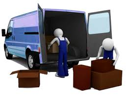
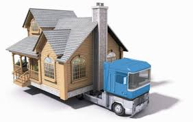
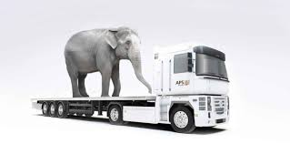
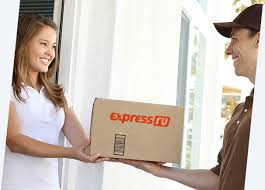

ПЕРЕВОЗКА И ДОСТАВКА СРЕДНЕГАБАРИТНЫХ ГРУЗОВ
Жд контейнерные перевозки являются самым экономичным, современным и быстрым способом доставки необходимого груза как габаритного, так и малогабаритного. Наша компания имеет многолетний опыт работы по контейнерным железнодорожным перевозкам и зарекомендовала себя только с хорошей стороны. Сегодня контейнерные железнодорожные перевозки пользуются большим успехом среди предпринимателей, потому как благодаря герметично закрытому контейнеру товар находится в полной целостности и сохранности.
ПЕРЕВОЗКА И ДОСТАВКА КРУПНОГАБАРИТНЫХ ГРУЗОВ
Мы имеем собственный автопарк, который позволяет держать конкурентные цены на рынке перевозок габаритных грузов. Мы перевозим грузы весом до 100 тонн, длинной до 25 метров.
Мы предлагаем компаниям услуги по перевозке бетонных конструкций, бытовок, цистерн, дорожной техники, комбайнов и любых других негабаритных и тяжеловесных грузов. Транспортировка подобных грузов всегда являлась серьёзным вопросом, требующим профессионального подхода, специальных транспортных средств и оформления разрешительной документации.
Решение всех этих проблем - наша задача, которую мы с успехом решаем на протяжении нескольких лет с грузами любой сложности.
Любой негабаритный груз мы перевозим собственным автотранспортом, используя низкорамные тралы, тягачи мировых брендом (MAN, Renoult, Volvo), специальные трейлеры, автокраны, полуприцепы и модульные прицепы.
ТРАНСПОРТНЫЕ ПЕРЕВОЗКИ ЖИВОТНЫХ
Любая транспортировка животных требует соблюдения целого ряда правил и норм. И это касается не только документов или прививок, но также и выбора вида транспортного средства, нахождения наиболее кратчайшего и удобного маршрута или создание нормальных условий нахождения животных в боксе для перевозки.
ОСОБЕННОСТИ
Для некоторых животных достаточно будет воспользоваться простым автотранспортным средством, а при перемещении иных видов животных могут понадобиться машины специализированного порядка. Так, например, для доставки партии коров к месту назначения потребуется соорудить специальный кузов. Он должен быть оптимальной высоты с решетчатыми стенками в крупных размерах и общая площадь для рогатого скота должна быть достаточно вместительной, чтобы перевозить его стоя.
ПЕРЕВОЗКА И ДОСТАВКА МАЛОГАБАРИТНЫХ ГРУЗОВ.
Малогабаритные перевозки — наиболее востребованный вид доставок, главными критериями для которых является высокая скорость и доступная цена. Более 200 000 перевозчиков на нашем сайте готовы перевезти малогабаритный груз по городу или в другие города России.